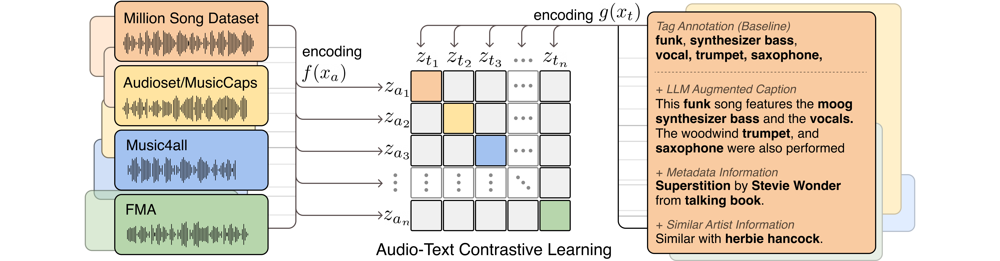

TTMR++: Enriching Music Descriptions with a Finetuned-LLM and Metadata for Text-to-Music Retrieval
Enriching Music Descriptions with a Finetuned-LLM and Metadata for Text-to-Music Retrieval, ICASSP 2024 (submitted)SeungHeon Doh, Minhee Lee, Dasaem Jeong, Juhan NamAbstract
Text-to-Music Retrieval, finding music based on a given natural language query, plays a pivotal role in content discovery within extensive music databases. To address this challenge, prior research has predominantly focused on a joint embedding of music audio and text, utilizing it to retrieve music tracks that exactly match descriptive queries related to musical attributes (i.e. genre, instrument) and contextual elements (i.e. mood, theme). However, users also articulate a need to explore music that shares similarities with their favorite tracks or artists, such as \textit{I need a similar track to Superstition by Stevie Wonder}. To address these concerns, this paper proposes an improved Text-to-Music Retrieval model, denoted as \textbf{TTMR++}, which utilizes rich text descriptions generated with a finetuned large language model and metadata. To accomplish this, we obtained various types of seed text from several existing music tag and caption datasets and a knowledge graph dataset of artists and tracks. The experimental results show the effectiveness of TTMR++ in comparison to state-of-the-art music-text joint embedding models through a comprehensive evaluation involving various musical text queries.
